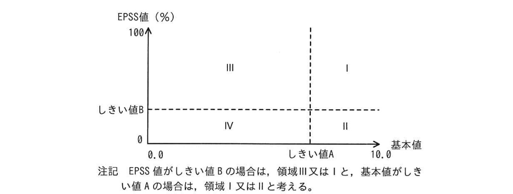

問2 脆弱性管理
M社は、従業員 3,000名の情報サービス業を営む企業である。ソフトウェアの開発・販売を行っており、自社ホームページのほか、販売したソフトウェアのサポート用Webサイトなど複数のWebサイト（以下、Webサイトをサイトという）を保有している。M社では、メンテナンスのために管理者が自宅や外出先からサイトにリモートアクセスする。セキュリティに関する問合せ窓口は、情報システム部が担当している。 M社が保有するサイトのうち、重要なサイト（以下、重要サイトという）は、プラットフォームに対する弱性診断（以下、PF 診断という）及びWebアプリケーションプログラムに対する弱性診断（以下、Web アプリ診断といい、PF診断とWeb アプリ診断を併せて両診断という）を初回リリース前に実施するルールになっている。 初回リリース後の両診断の実施については任意である。重要サイトの指定は、扱う情報の重要性、停止による影響などを勘案し、各サイトの所管部門が判断している。 重要サイト以外のサイトに対する両診断の実施は任意である。 両診断は、情報システム部の選定した専門ベンダーP社に依頼して実施、又は情報システム部の選定した弱性診断ツール（以下，診断ツールという）を用いて各サイト担当者が実施する。ただし、緊急の場合、情報システム部が実施することもある。P社のWebアプリ診断は、弱性が実際に悪用できることを確認した上で報告してくれるので、評判がよい。 弱性は Gritical， High， Medium， Low,Noneの5段階の深刻度レベルに分類される。P社に依頼して診断を行う場合は、P社から深刻度レベルの報告を受ける。深度レベルは、情報システム部が選定した診断ツールの場合はCVSS 基本値によって分類される。P社の診断では、P社が独自の知見でCVSS 基本値を基に値を変え、分類している。M社では，深刻度レベルがHigh 以上の場合は速やかな修正を必須とし、それ以外は所管部門が対応要否を判断する。
[脆弱性の報告］ ある日，M社のキャンペーンサイト✕（以下，サイト✕という）のキャンペーンページに SQL インジェクションの弱性が存在しているという指摘が問合せ窓口に報告された。報告内容についてサイト担当者に確認したところ、弱性が存在する可能性があるとの回答であった。サイトは重要サイトに指定されていなかった。サイトXの仕様を図1に示す。
・Web サーバ、Web アプリケーションサーバ及びデータベース（以下，DBという）サーバから成る。
・キャンペーン情報を DB サーバに格納している。
・顧客情報は保有していない。
・キャンペーンページのURLのクエリパラメータにコンテンツ番号が含まれている。
URL 例：https://site-x.m-sha.co.jp/info?article=20250101・コンテンツ番号が DB サーバ上に存在しない場合、又は SQLが構文エラーになる場合は、“コンテンツがありません”というメッセージを返す。
・Web アプリケーションプログラムにおいて、クエリパラメータ article の値は SQLでの検索では数値型として扱われる。
情報システム部のEさんとJ課長は、報告内容を確認するために、情報システム部が診断ツールを実行する旨をサイトXの担当者に伝えた。 Webアプリ診断用の診断ツールを該当ページに対して実行したところ、深刻度レベルがHighのSQLインジェクションの脆弱性が検出された。SQLインジェクションの脆弱性検出時のクエリパラメータ及び応答を表1に示す。
| クエリパラメータ | 応答 |
|---|---|
| article=20250401 | 2025年4月1日のキャンペーンのコンテンツが返される。 |
| article=20250401' | a |
| article=202504011%20and%201=a | b |
| article=20250401%20and%20'a'='b | c |
| article=20250401%20and%201=0 | d |
| article=20250401%20and%201=1 | e |
Eさんは、速やかにサイト担当者に連絡し、インターネットからサイトにアクセスできないようネットワーク構成を変更した上で、該当するプログラムを修正するよう依頼した。これに対してサイト✕の担当者は、“重要情報の漏えいなどの問題が発生することはない。DBには重要情報もない。サイトXにアクセスできないようにする必要はない。”と主張した。それに対してEさんは、“本弱性はブラインド SQLインジェクションの弱性に該当する。そのため、表1と同様の手法を用いることによって、DB のテーブル名が特定できることになる。”と説明した。Eさんは、DB のテーブル名を使うと攻撃者が次にどのような攻撃を行えるかを説明し、対応する必要性を説いた。これを受け、迅速に対応が行われた。
[施弱性が存在していた状況の確認と一斉診断の実施] 対応完了後，情報システム部では、公開サイトは全て重要サイトに指定するようにルールを変更することにした。同時に、M社が保有する全ての公開サイトに対する一斉の両診断（以下，一斉診断という）を実施することにし、その診断をP社に依頼した。診断対象サイトの情報を表2に示す。
| サイト名 | サイト特性 | 社外利用者向けアカウントの作成方法 | 1日当たりのアクセス数 | 顧客情報有無 | 停止による影響 |
|---|---|---|---|---|---|
| サイトA | ECサイト | 利用者が作成 | 10,000 | 有 | 大 |
| サイトB | 業務サイト | 管理者が発行 | 3,000 | 有 | 中 |
| サイトC | 情報提供サイト | なし | 10,000 | 無 | 小 |
| ： | ： | ： | ： | ： | ： |
| サイトZ | （省略） | （省略） | （省略） | （省略） | （省略） |
診断の結果、深刻度レベル High 以上の脆弱性が検出されたサイトが数サイトあり、Medium以下の弱性が数十件検出されたサイトも多数あった。 サイトによっては、初回リリース時の両診断以降にアップデートや設定変更をしていないにもかかわらず、初回リリース時の両診断結果と今回の一斉診断結果が異なっている場合もあった。P社の診断は、決められた手順に従って行い、診断結果は技術レビューを行うので、診断員による差異はほぼないと、EさんはP社から聞いていた。また、初回リリース時の両診断では、サイトに不具合はなかったと報告を受けている。Eさんが、改めてP社に確認すると、診断結果が異なっていた要因は、[f]や[g]だった。これらのことから、Eさんは初回リリース後も定期的な両診断が必要であると結論づけた。
[PF 診断で検出された脆弱性] PF 診断で検出された胎弱性を表3に示す。
| サイト名 | 脆弱性ID | 脆弱性 | 深刻度レベル | CVSSv3基本値 | 補足 |
|---|---|---|---|---|---|
| サイトA | PA-1 | SSL/TLSサーバの暗号強度が弱く、推奨されていない鍵交換をサポート | Medium | 5.9 | |
| サイトB | PB-1 | OpenSSHでリモートから認証なしに任意のコード実行が可能 | High | 8.1 | CVE-20XX-XXXXX |
| サイトB | PB-2 | 管理者用のWebのログイン画面に認証試行が何回でも可能 | Medium | 5.3 | |
| サイトB | PB-3 | SSL/TLSサーバの暗号強度が弱く、推奨されていない鍵交換をサポート | Medium | 5.9 | |
| サイトC | PC-1 | SSH接続の安全性を低下させることが可能 | Medium | 5.9 | CVE-20YY-YYYYY |
| サイトD | PD-1 | （省略） | High | 7.2 | |
| サイトD | PD-2 | （省略） | Critical | 9.8 | |
| サイトE | PE-1 | （省略） | Medium | 6.5 |
弱性 PA-1とPB-3について、CRYPTREC が作成し、IPAが発行している "TLS 暗号設定ガイドライン Ver. 3.1.0”の“4.推奨セキュリティ型の要求設定”には、表4に示す鍵交換におけるビットセキュリティの基準を満たすよう記載されていた。そのため、サイトA及びサイトBは基準を満たす設定に変更することにした。
| 鍵交換プロトコル | 基準 |
|---|---|
| ECDHE | [h]ビットセキュリティ以上を満たす[i] |
| DHE | [j] ビットセキュリティ以上を満たす[k] |
脆弱性 PB-1は、管理者がメンテナンス用にリモートアクセスで使っているOpenSSHにおいて検出された。OpenSSH では、ログインが一定時間内に成功しないと、認証試行のタイムアウト処理が実行される。脆弱性 PB-1は、あるセキュリティベンダーの報告によると、認証試行のタイムアウト処理が同時に多数実行されると起き得る問題であり、認証試行の接続時間 （LoginGraceTime）の設定が120秒の場合、その間に100件試行されると、OpenSSH のログに "Timeout before authentication”という認証タイムアウトのメッセージが多数出力され、3～4時間で悪用に成功する可能性があるとのことだった。もしも、脆弱性を修正したバージョンのOpenSSHに更新できない場合には、次のいずれかを行う。
・トレードオフはあるものの，認証試行にタイムアウトを設けないようにサーバの設定を変更する。
・①サイト担当者が攻撃を早期に検知する方法を採用することによって被害を抑制する。
サイトBでは、OpenSSH の更新を行った。
脆弱性 PB-2は、送元IPアドレス制限が対策の一つだが現実的な運用が難しい。
代わりの対策として、ログイン画面のアカウントロックがあるが、採用する場合はロック解除の運用方法や実装について検討が必要である。サイトBでは、②アクセスのPCを認証する対策を採用した。
[Webアプリ診断で検出された施弱性] Web アプリ診断で検出された弱性を表5に示す。
| サイト名 | 脆弱性ID | 脆弱性 | 深刻度レベル | CVSSv3基本値 | 補足 |
|---|---|---|---|---|---|
| サイトA | WA-1 | 本来閲覧できない画面を閲覧可能 | Medium | 4.3 | 購入機能で、商品の詳細を閲覧するリクエストに含まれるパラメータitemの5桁の数字を変更することによって一般会員が本来閲覧できない商品の説明画面を閲覧できた。 CVSS:3.1/AV:N/AC:L/PR:L/UI:N/S:U/C:L/I:N/A:N |
| サイトB | WB-1 | 本来閲覧できない画面を閲覧可能 | Medium | 5.3 | 管理者用アカウントでログインし、発注確認機能のURLを確認後、一般利用者アカウントでログインし直し、WebブラウザのアドレスバーにURLを入力することによって、管理者用の画面を閲覧できた。この画面では、他人の発注情報が全て閲覧できた。 CVSS:3.1/AV:N/AC:H/PR:L/UI:N/S:U/C:H/I:N/A:N |
| サイトC | WC-1 | OSコマンドインジェクション | Critical | 9.8 | 問合せフォームが直接シェルに入力値を渡す作りになっていて、任意のOSコマンドが実行できた。ただし、管理者権限が必要な操作はできなかった。 |
弱性 WA-1とWB-1は、HTTPリクエストの内容を一部変更することによって本来開覧できない画面を閲覧できるという点では同じであるが、評価指標の値が異なる。 評価指標のうち、③Attack Complexity（AC）の値はそれぞれLとHであった。 弱性 WC-1について、④管理者権限が必要な操作ができなかったのは、サイトCの仕様どおりであった。サイトGの仕様を図2に示す。
1.Webサーバ及び Webアプリケーションサーバから成る。
2.DB サーバとの連携はしていない。
3.Webアプリケーションプログラムは、一般利用者権限の専用アカウントでプロセスを実行している。
4.問合せフォームに入力された値をメールコマンドで管理者宛てに送る。
5.問合せ内容がログに保存され、その中にメールアドレスなどの個人情報をもつ。
6.ログには特定のアカウントだけがアクセスできる。
[脆弱性評価方法の検討] 一斉診断が一段落したところで、情報システム部は弱性管理についての課題を議論した。対応の要否判断が不適切であったサイトや対応が遅すぎたサイトがあったので、J課長は、Eさんに新たな弱性評価方法を検討するよう指示した。 はじめにEさんが調査したところ、IPA のホームページに“脆弱性対応におけるリスク評価手法のまとめ”というレポートが公開されていたので，これを参考にすることにした。Eさんは、検討内容をJ課長に報告した。次は、その際のEさんと」課長の会話である。
- Eさん
- レポートでは、対応要の胎弱性を簡易的な1次評価で選び、さらに、2次評価で優先度を評価する手法が提案されています。
- J課長
- 1次評価は具体的にはどのような評価をするのか。
- Eさん
- 1次評価では、基本値と Exploit Prediction Scoring System （EPSS）値を用います。EPSS 値の代わりにCVSSv3の現状値を用いる方法もありますが、⑤現状値と EPSS 値を比べると、現状値は手間が掛かり、EPSS 値は手間が掛からないとされています。1次評価では図3のように脆弱性を領域図で4領域に分類します。

図3 1次評価の領域図
- J課長
- しきい値はどうするのか。
- Eさん
- しきい値Aは7.0に、しきい値Bは1%に設定しようと考えています。領域Iは対応不要とし、領域Ⅰ～Ⅲを2次評価の対象にします。
- J課長
- なるほど。では、そのしきい値に設定してみて、対応すべき施弱性に漏れが出るなどの問題があれば、しきい値を見直すことにしよう。
- Eさん
- はい。分かりました。
- J課長
- あとはEPSS 値を用いた脂弱性評価について、しきい値の見直し以外にも、[l]を継続的に行うことで被害を防ぐ助けになるだろう。
- Eさん
- 分かりました。
- J課長
- ところで、Webアプリ診断では、見つかった脆弱性のEPSS 値が報告されないことが普通だが、どのように評価するのか。
- Eさん
- ⑥P社のWebアプリ診断であれば、見つかった胎弱性のEPSS値は、しきい値Bよりも高いとみなすのが妥当であると考えられます。Webアプリ診断で検出される脆弱性を、全て領域IかⅢとみなそうと考えています。
- J課長
- その方法が安全だな。次に、2次評価はどうするのか。
- Eさん
- 2次評価は、環境値と先に評価した領域とを組み合わせた方法にしようと考えています。
- J課長
- 環境値を全て算出するのだな。
- Eさん
- 環境値の算出においては、現状評価基準の各評価指標を、“Not Defined””と設定することができます。環境評価基準での評価指標の値の判断は各サイト担当者に依頼します。そして、表6に示す対応優先度表によってS~Cの最終的な対応優先度を決定します。
| 領域 | CVSSv3環境値 | |||
|---|---|---|---|---|
| 0～3.9 | 4.0～6.9 | 7.0～8.9 | 9.0～10.0 | |
| Ⅰ,Ⅲ | C | B | A | S |
| Ⅱ | C | C | B | A |
- J課長
- 分かった。一斉診断の結果で幾つか評価して確認してほしい。
- Eさん
- 分かりました。
[対応優先度評価の実施] Eさんが2次評価を幾つか行った結果を表7及び表8に示す。
| PB-1 | PC-1 | PD-1 | PD-2 | PE-1 | |
|---|---|---|---|---|---|
| EPSS値（%） | 39 | 96.5 | 0.0 | 2.6 | 8.7 |
| CVSSv3環境値 | 8.1 | 7.7 | 5.7 | 8.0 | 6.5 |
| 対応優先度 | m | n | o | p | q |
| WA-1 | WB-1 | WC-1 | |
|---|---|---|---|
| EPSS値（%） | 対象外 | 対象外 | 対象外 |
| CVSSv3環境値 | 5.0 | 7.1 | 9.8 |
| 対応優先度 | r | s | t |
この運用によって、弱性対応の優先度評価がサイト担当者によらず適切かつ迅速にできるようになった。
設問1 表1中のに入れる応答を、解答群の中から選び、記号で答えよ。なお、解答は重複して選んでもよい。 解答群ア“コンテンツがありません”というメッセージが返される。 イ 2025年4月1日のキャンペーンのコンテンツが返される。 ウ サーバから応答が返されない。 エ 内部サーバエラーが返される。 設問2 本文中のに入れる適切な字句を、それぞれ 20字以内で答えよ。 設問3[PF 診断で検出された弱性]について答えよ。 kコに入れる適切な字句の組合せを、解答h（1） 表4中の群の中から選び、記号で答えよ。 解答群記号jikh112128鍵長曲線ア112128直線署名イ128112曲線鍵長ウ112128署名直線エ（2） 本文中の下線①について、検知する方法を、具体的に答えよ。 （3） 本文中の下線②について、採用した対策を、20字以内で具体的に答えよ。
設問2 本文中のに入れる適切な字句を、それぞれ 20字以内で答えよ。
設問3[PF診断で検出された脆弱性]について答えよ。 （1）表4中のh〜kコに入れる適切な字句の組合せを、解答群の中から選び、記号で答えよ。
| 記号 | h | i | j | k |
|---|---|---|---|---|
| ア | 112 | 曲線 | 128 | 鍵長 |
| イ | 112 | 直線 | 128 | 署名 |
| ウ | 128 | 曲線 | 112 | 鍵長 |
| エ | 128 | 直線 | 112 | 署名 |
（2）本文中の下線①について、検知する方法を、具体的に答えよ。 （3）本文中の下線②について、採用した対策を、20字以内で具体的に答えよ。
設問4[Webアプリ診断で検出された弱性]について答えよ。 （1） 本文中の下線③について、弱性 WA-1のAC がLと評価された評価根拠と脂弱性 WB-1のAC がHと評価された評価根拠を、それぞれ具体的に答えよ。 （2） 本文中の下線④について、該当するサイトCの仕様を、図2中の項番から選び、答えよ。
設問 5[弱性評価方法の検討]について答えよ。 （1） 本文中の下線⑤について、現状値は手間が掛かる理由と EPSS 値は手間が掛からない理由を、それぞれ 40字以内で答えよ。 （2） 本文中の[l]に入れる適切な字句を、15字以内で答えよ。 （3） 本文中の下線⑥について、妥当である理由を、30字以内で答えよ。
設問6 表7中及び表8中の[m]〜[t]に入れる対応優先度を答えよ。
問2 脆弱性管理
設問1
解答例
a＝ア b＝ア c＝ア d＝ア e＝イ
ブラインドSQLインジェクション（Boolean-based Blind SQLi）の動作を確認する問題。仕様より「article値は数値型として扱われ、構文エラーまたは存在しないコンテンツ番号の場合は『コンテンツがありません』を返す」。各行の分析：a（article=20250401'）：数値型フィールドにシングルクォートを渡すとSQL構文エラー→ア。b（article=20250401 and 1=a）：「a」は未定義の識別子で構文エラー→ア。c（article=20250401 and 'a'='b）：シングルクォートが奇数個（3個）→未閉じ文字列リテラルで構文エラー→ア。d（article=20250401 and 1=0）：1=0は常にFALSEのためWHERE条件が偽→0件ヒット→ア。e（article=20250401 and 1=1）：1=1は常にTRUEのためWHERE条件が真→通常通りコンテンツ返却→イ。dとeの応答差（ア vs イ）がブラインドSQLiの存在証明。この手法を応用してDBのテーブル名・列名を1文字ずつ推測する攻撃へと発展する。
設問2
解答例
（順不同） f＝新たな脆弱性が発見されたこと g＝リスクが変わったと評価し値を変えたこと
「初回リリース後にアップデートや設定変更をしていないにもかかわらず診断結果が異なった」原因を問う問題。P社の診断は技術レビューで診断員差異はほぼないため（本文）、サイト側・評価基準側の変化が原因となる。[f]（サイト変化なしで新たな脆弱性が検出された要因）：初回リリース後に「新たな脆弱性が発見・CVE公開」されたため、同じソフトウェア構成でも後の診断では既知脆弱性として検出された。ゼロデイが時間経過でn-dayに変わる典型パターン。[g]（同じ脆弱性のスコアが変動した要因）：P社は「独自の知見でCVSS基本値を基に値を変えて分類している」（本文）ため、P社内の評価基準更新・攻撃実績情報の蓄積によって同一脆弱性のスコアが変わりうる。この二要因から「初回リリース後も定期的な両診断が必要」という結論が導かれる。
設問3(1)
解答例
ウ
CRYPTREC「TLS暗号設定ガイドラインVer.3.1.0」の「4.推奨セキュリティ型」に基づく表4の空欄補充問題。ECDHE（楕円曲線ディフィー・ヘルマン）：楕円曲線（P-256など）のパラメータ種別で安全性を表現→[i]=曲線。推奨ビットセキュリティはP-256で128ビット相当→[h]=128。DHE（有限体ディフィー・ヘルマン）：素体上で動作し安全性は鍵のビット長で表現→[k]=鍵長。推奨最低鍵長は2048ビット（112ビットセキュリティ相当）→[j]=112。h=128・i=曲線・j=112・k=鍵長の組合せは選択肢ウ。「曲線」でなく「署名」と誤答する典型ミスに注意：曲線はECDHEのパラメータ種別、署名はECDSA等の別コンテキストの用語。
設問3(2)
解答例
OpenSSHのログに認証タイムアウトのメッセージの出力が多数あったらサイト担当者に電子メールでアラートを送る
脆弱性PB-1の悪用条件は「認証タイムアウト処理が同時に多数発生すること」。本文より「LoginGraceTime=120秒の設定下で100件試行されると認証タイムアウトメッセージが多数出力され3〜4時間で悪用に成功する可能性がある」とのこと。OpenSSHを更新できない場合の緩和策として「攻撃を早期に検知する方法」が求められる。解答は「OpenSSHのログを監視し、Timeout before authenticationメッセージが短時間に多数出力された場合にサイト担当者へアラートを送信する仕組みを設ける」こと。具体的にはログ監視ツール（Logwatch・Fluentd等）で該当メッセージの頻度を閾値監視し、閾値超過でメール等でアラート発報する。攻撃の早期検知により管理者が迅速に対処（例：攻撃元IPのブロック）できる。「認証タイムアウトのメッセージ」という特定のログパターンが答えの核心。
設問3(3)
解答例
クライアント認証を行う
脆弱性PB-2は管理者用Webログイン画面の認証試行回数無制限（ブルートフォース攻撃に対する脆弱性）。提示されている対策の選択肢は①送信元IPアドレス制限（現実的な運用が困難）、②アカウントロック（ロック解除の運用・実装課題あり）、③下線②「アクセスのPCを認証する対策」。③の「アクセスのPCを認証する」とはクライアント証明書認証の採用。登録済み管理者端末（クライアント証明書がインストールされたPC）からのみログインを許可することで、不正端末からのブルートフォース試行をTLSハンドシェイク段階で拒否できる。20字以内の解答では「クライアント証明書による端末認証を行う」が適切。IPアドレス制限と異なりVPN経由・外出先からでも管理者端末を識別可能な点も利点。
設問4(1)
解答例
WA-1：パラメータitemの値が容易に推測できること
WB-1：発注確認機能のURLが推測困難であること、発注確認機能のURLを入手する必要があること
CVSSv3のAttack Complexity（AC）は攻撃者が攻撃を成功させるために必要な条件の複雑さを評価する指標。Low（L）＝特別な条件不要、High（H）＝攻撃に追加の条件・事前知識が必要。WA-1（AC=L）の根拠：購入機能のitemパラメータ（5桁の数字）を変更するだけで他会員の情報を閲覧できる。数字を順番に変えるだけで攻撃成立のため特別な事前知識・準備は不要→AC=Low。WB-1（AC=H）の根拠：一般ユーザが管理者用発注確認URLを閲覧するには「まず管理者アカウントでログインして対象URLを入手する」という事前ステップが必要。URLを入手するための追加条件が攻撃の複雑度を上げる→AC=High。どちらもIDOR（Insecure Direct Object Reference）の脆弱性だが、URLの予測可能性の違いがACの評価を分ける点が本問のポイント。
設問4(2)
解答例
3（サイトCの仕様）
脆弱性WC-1（OSコマンドインジェクション）の補足欄に「管理者権限が必要な操作はできなかった」とある。この事実が「サイトCの仕様どおりである」根拠となる仕様の項番を図2から選ぶ問題。図2のサイトC仕様より、項番3「Webアプリケーションプログラムは、一般利用者権限の専用アカウントでプロセスを実行している」が根拠。プロセスが一般ユーザ権限で動作しているため、OSコマンドを注入しても管理者権限（root等）が必要なファイル操作は権限不足エラーとなる。これはOSの「最小権限の原則（Principle of Least Privilege）」を適用した設計であり、脆弱性の影響範囲を限定することに成功している。ただしCVSSスコアは依然9.8（Critical）で高く、ログへのアクセスや任意コマンド実行などの被害は依然大きい点も注意。答えは項番3。
設問5(1)
解答例
現状値（CVSSスコア）：攻撃コードなどの情報を多くの公開サイトにある情報から判断する必要があるから
EPSS値：FIRSTのサイトで公開されている値をそのまま使えばよいから
CVSSv3の現状値（Temporal Score）は「攻撃コードの成熟度（Exploit Code Maturity）」「修正方法の存在（Remediation Level）」「報告の信頼性（Report Confidence）」の3指標で構成される。これらを設定するには、セキュリティベンダーのブログ・Exploit-DB・NVD等の複数情報源を継続的に人手で調査しなければならず工数がかかる（手間が多い理由）。一方、EPSS（Exploit Prediction Scoring System）はFIRST（Forum of Incident Response and Security Teams）が日次で更新・公開するAPIから値を取得するだけでよく、人手の調査が不要（手間が少ない理由）。40字以内では「現状値は多くの情報源を確認する必要があるから／EPSS値はFIRSTのサイトで公開されている値をそのまま使えるから」という形式でまとめる。
設問5(2)
解答例
EPSS値の監視
J課長の発言の空欄[l]は「EPSS値の継続的な監視（モニタリング）」が答え。EPSS値は毎日更新されるため、診断実施時点では低スコア（領域IIや境界付近）だった脆弱性が後日急上昇することがある（新たな攻撃コード公開・悪用事例増加などで）。初回評価後も定期的にEPSS値をチェックし、しきい値Bを超えた脆弱性を再評価・対応優先度を引き上げることで時間経過とともにリスクが高まった脆弱性を見逃さない運用が実現できる。15字以内で「EPSS値の継続的な監視」または「EPSS値のモニタリング」とまとめる。CVSS基本値は公開後変わらないが、EPSS値は変動するため継続監視の対象となる点が問題設計の意図。
設問5(3)
解答例
診断時に実際に悪用できることを確認しているから
P社のWebアプリ診断は「脆弱性が実際に悪用できることを確認した上で報告する」（本文）。つまりP社が報告した脆弱性は「現実に悪用可能であることが実証済み」の脆弱性。EPSS値は「将来的に悪用される可能性（確率）」を示す指標だが、P社診断で検出されたWebアプリ固有の脆弱性はCVE番号が付与されないことも多くEPSS値が存在しない。それでも「実際に悪用できることが確認済み」であるため悪用可能性は実証済みであり、しきい値B（1%）を大きく上回ると判断できる。30字以内の解答は「P社が実際に悪用できることを確認しているから」が骨格。CVSSスコアが高くてもEPSS値が低い場合より、実証済みの方がリスクが高いという考え方を押さえる。
設問6
解答例
m＝A n＝A o＝C p＝A q＝B r＝B s＝A t＝S
1次評価→2次評価の手順で各優先度を決定する。しきい値A=7.0（CVSS基本値）、しきい値B=1%（EPSS値）。領域I：両方高（CVSS≥7.0 AND EPSS≥1%）、領域II：CVSS高・EPSS低、領域III：CVSS低・EPSS高、領域IV：両方低（対応不要）。表6：領域I・III→環境値0-3.9=C/4.0-6.9=B/7.0-8.9=A/9.0-10.0=S、領域II→環境値0-6.9=C/7.0-8.9=B/9.0-10.0=A。PB-1：8.1≥7.0 AND 39%≥1%→領域I、環境値8.1→A（m=A）。PC-1：5.9<7.0 AND 96.5%≥1%→領域III、環境値7.7→A（n=A）。PD-1：7.2≥7.0 AND 0.0%<1%→領域II、環境値5.7→C（o=C）。PD-2：9.8≥7.0 AND 2.6%≥1%→領域I、環境値8.0→A（p=A）。PE-1：6.5<7.0 AND 8.7%≥1%→領域III、環境値6.5→B（q=B）。WebアプリはP社診断で実証済み→EPSS>しきい値B→領域IかIII扱い。WA-1：環境値5.0→B（r=B）。WB-1：環境値7.1→A（s=A）。WC-1：環境値9.8→S（t=S）。